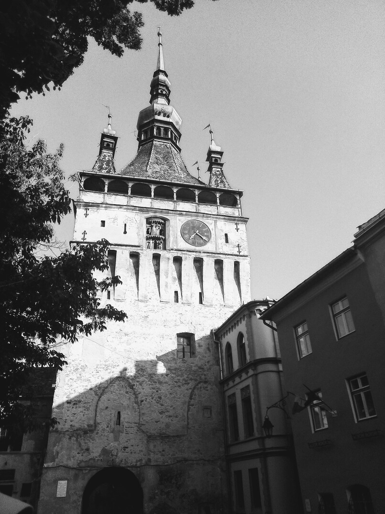
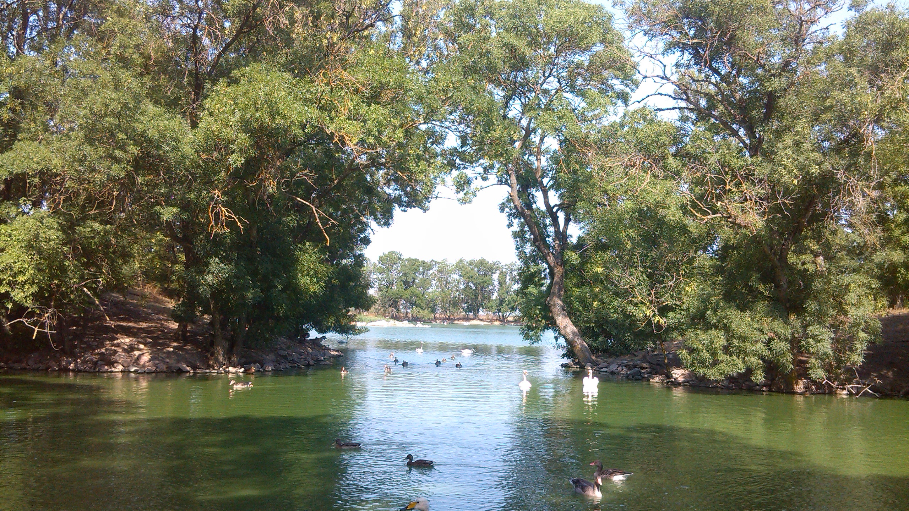
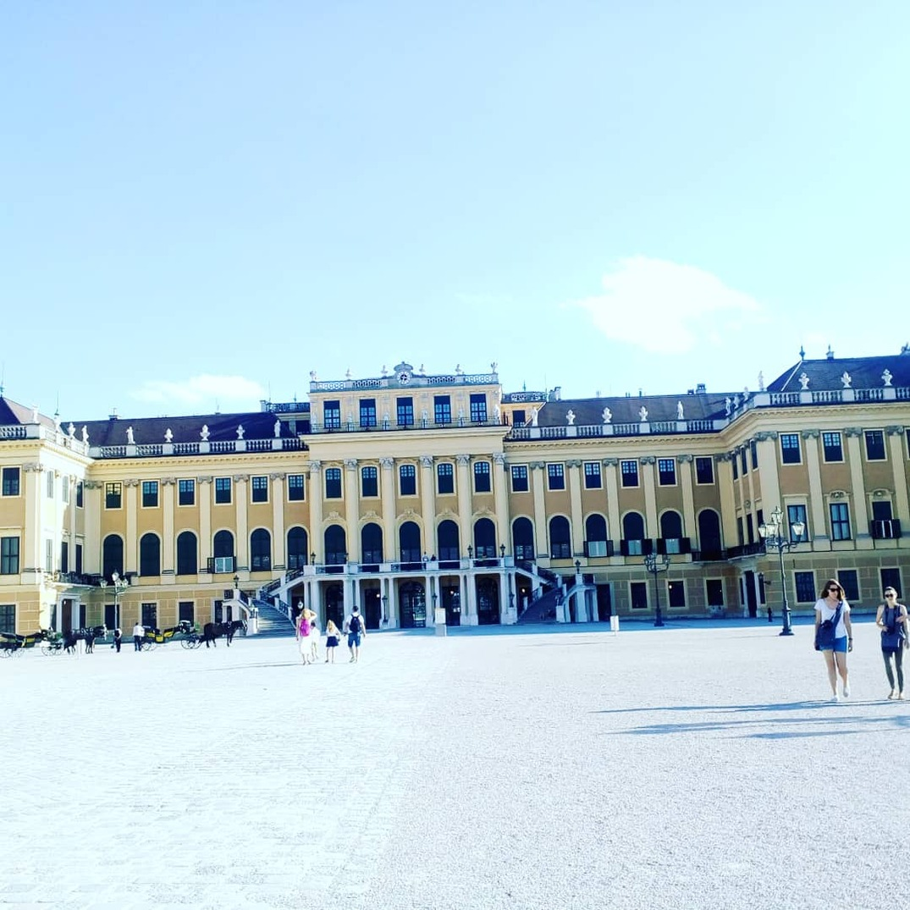
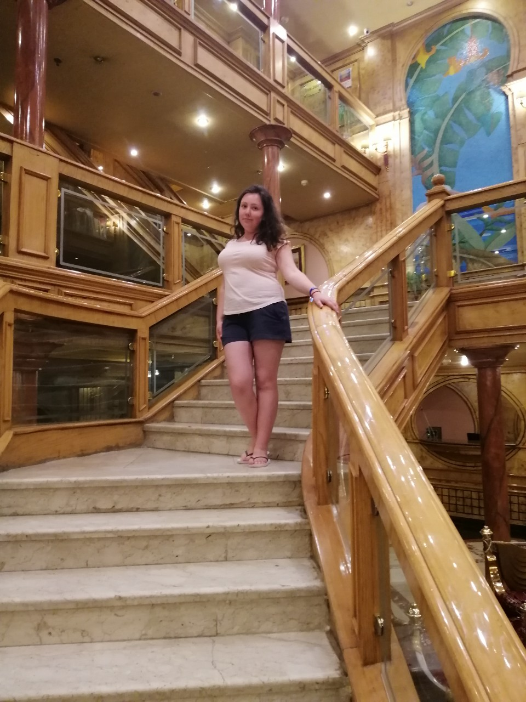

Привіт. Мене звати Марічка. Я travel guide
Подорож - стиль мого життя! Якщо ви відчуваєте те саме, то пакуйте валізи і let's travel together!!!
Ще з дитинства мені подобалося дивитися передачі про подорожі, про інші країни, дізнаватися цікаве про їхню культуру, звичаї, традиції... Але я не мала можливості поїхати навіть у сусіднє місто( Якби мені сказали, що через років 5-10 я стану travel guide, не повірила б ні за що. Проте це правда. Якщо маєш мрію, яка співпадає з ціллю, то все можливо. Сьогодні я не тільки подорожую, але й ділюся своїм досвідом з іншими, відкриваю людям завісу країн, якими ми майндруємо. Вже майже рік як туризм став, проте я маю для тебе ще багато цікавого.
| Статистика | |||
|---|---|---|---|
| 13 | 150 | 7000+ | 200 |
| країн | міст | фото | нових друзів |
Insagran: khomych_masha
   Анатоль Франс
Коли припливаєш до Стокгольму, тобі обов'язково покажуть невелике місце зібрання туристів. Це одна з найменших скульптур у Європі, скульптура "залізний хлопчик" або "хлопчик, що дивиться на місяць". Він сидить тут день і ніч, взимку і влітку і має велику кількість гостей і дарунків. З усього світу приїжджають, щоб подивитися на нього, пофотографуватися, загадаи бажання і зробити подарунок. Влітку дарують солодощі, монетки; зимку в'язані шапочки і шарфики. Люблять його всі.
Мабуть кожен в житті хоча б раз чув про Стівена Сігала - американського актора. Жителі естонської столиці теж його знають і бачать на власні очі ледь не кожного дня. Думаєте, що я кажу нісенітницю? А от і ні! Стівен Сігал - місцева знаменитість. Це хто б подумав - чайка. Від слова seagull, що з англійської перекладається як "чайка". А Стівеном її назвали туристи. Так і з'явився місцевий кумир.
| Transport | Clothes | Money |
|---|---|---|
| Літак - тільки для швидкого і зручного перельоту | Не бери багато одягу. Ти ж не переїжджаєш туди жити... | Не бери купюри номіналом 100, 200 євро. Часто їх не приймають в магазинах |
| Атобус і авто - якщо хочеш побачити більше | Обов'язково має бути зручне взуття (не нове) | Потрібно мати дрібні гроші для WC |
| Не бійся громадського транспорту. Це ще та пригода! | Май про запас плащ або парасольку. Погода непередбачувана | Візьми банківську карту, але попередь свій банк про виїзд за кордон |
| Обов'язково купуй і компостуй квиток! |
I remember all picture I saw, but photoes remember better